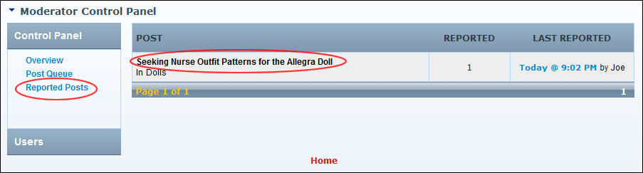

Managing Reported Posts
How to manage posts that have been reported.
- Select Moderate from the module actions menu - OR - Click the Moderate link. This opens the Moderator Control Panel.

- In the left-hand panel, select Reported Posts. This displays a summary list of reported posts.
- In the Post column, click on a post title link to view the post in full.

- Optional. Click the Click To Address Report
 button to address this reported post. This displays the This Report Has Been Addressed
button to address this reported post. This displays the This Report Has Been Addressed icon.
icon.
- Address the reported post as required.